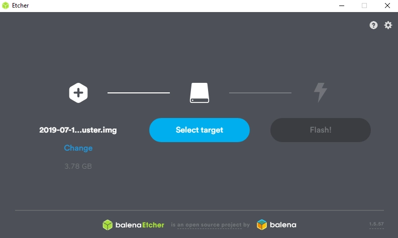
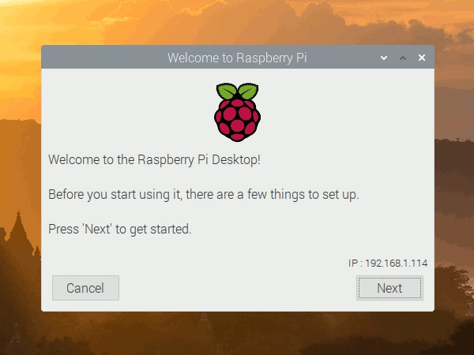
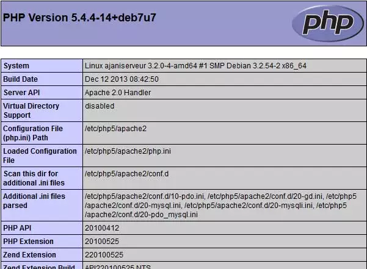
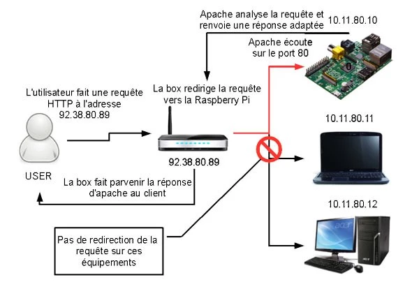
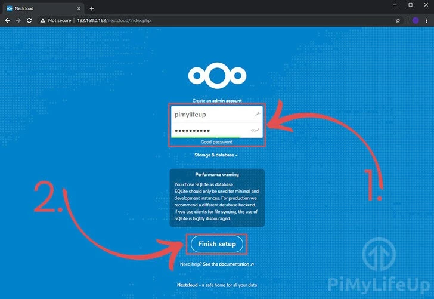
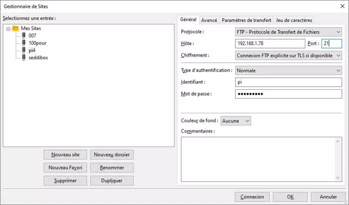
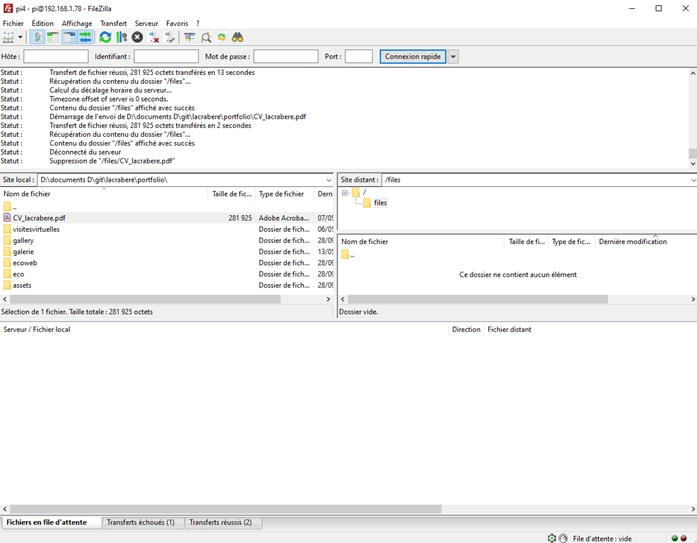

Transformez votre Rasberry pi 4 en serveur / Cloud
télécharger l'image officielle de r Pi 4 sur le site (raspbian)
flachez votre carte microSD via etcher
configurer le premier démarrage
Votre Site web
Nous allons d’abord installer un serveur web pour votre site ( tuto )
Installation d’Apache
Avant d’installer le serveur, assurons nous d’avoir une machine bien à jour. Pour ce faire nous devons posséder les droits administrateur, soit en étant connecté en root, soit via la commande sudo.
sudo apt update
sudo apt upgrade
sudo apt update
Une fois la Raspberry Pi à jour, nous allons installer le serveur Apache.
sudo apt install apache2
Au passage, nous allons en profiter pour donner des droits au dossier d’apache qui vous permettra de facilement administrer les sites. Pour cela, lancez les commandes suivantes :
sudo chown -R pi:www-data /var/www/html/
ou
sudo chown -R pi(ou user) /var/www
puis
sudo chmod -R 770 /var/www/html/
Vérifier qu’Apache fonctionne
Une fois l’installation terminée, nous pouvons tester qu’Apache fonctionne correctement en nous rendant sur l’adresse de la Raspberry.
Pour cela, il faut tenter d’accéder à la Raspberry depuis le port 80 (ce port n’étant pas encore ouvert depuis l’extérieur, il faudra le faire depuis la Raspberry elle-même). Ne vous inquiétez pas, c’est très facile. Il vous suffit d’ouvrir le navigateur web de la Raspberry (par défaut Midori sous Raspbian), et d’aller à l’adresse « http://127.0.0.1 ». Vous devriez alors obtenir une page avec un message du genre « It works! » et plein d’autre texte.
Installation de PHP sur la Raspberry
On va encore une fois faire appel à l’administrateur pour installer PHP avec la ligne de commande.
sudo apt install php php-mbstring
Vérifier que PHP fonctionne
Pour savoir si PHP fonctionne correctement, ce n’est pas très compliqué, et la méthode est relativement proche de celle employée pour Apache. Vous allez en premier lieu supprimer le fichier « index.html » dans le répertoire « /var/www/html ».
sudo rm /var/www/html/index.html
Puis créez un fichier « index.php » dans ce répertoire, avec cette ligne de commande
À partir de là, le fonctionnement est le même que pour la vérification d’Apache. Vous tentez d’accéder à votre page, et vous devriez avoir un résultat proche de cette image (si vous n’avez pas d’interface, utilisez la même méthode que précédemment, et cherchez les mots « PHP Version »).
Tableau généré par la commande phpinfo sur une raspberry.
Une base de données MySQL pour votre serveur
Installer MySQL
Pour ce faire, nous allons installer mysql-server et php-mysql (qui servira de lien entre php et mysql)
sudo apt install mariadb-server php-mysql
Pour vérifier le fonctionnement de MySQL, cette fois nous utiliserons uniquement la ligne de commande. Pour cela, nous allons simplement nous connecter via la commande :
sudo mysql --user=root
Nous allons maintenant supprimer l’utilisateur root et créer un nouvel utilisateur root, car celui par défaut n’est utilisable que par le compte administrateur du système, et n’est donc pas accessible aux script PHP du serveur.
Pour cela, une fois connecté à MySQL, lancez les commandes suivantes (remplacez password par le mot de passe de votre choix) :
DROP USER 'root'@'localhost';
CREATE USER 'root'@'localhost' IDENTIFIED BY 'password';
GRANT ALL PRIVILEGES ON *.* TO 'root'@'localhost' WITH GRANT OPTION;
Puis quitter
quit
Vous avez donc maintenant un serveur web, relié à PHP et à MySQL. Soit tout ce qu’il faut. Vous pouvez donc vous arrêter ici.
(Lors de vos prochaine connections, vous pourrez donc utilisez la commande mysql --user=root --password=votremotdepasse).
Rendre votre raspberry pi accessible depuis le web
Rediriger les requêtes vers le serveur Apache sur Raspbian
Dans un premier temps, il va donc falloir faire en sorte que lors d’une requête sur votre box, qui est la seule à être accessible depuis l’extérieur, celle-ci soit redirigée vers votre Raspberry Pi, pour qu’elle soit traitée par le service adapté (en l’occurrence le serveur Apache2).
Pour cela, il va falloir accéder à l’interface de configuration de votre box. L’accès se fait différemment selon votre Fournisseur d’Accès Internet. Il faut donc que vous cherchiez (par exemple sur le site de votre fournisseur d’accès, ou plus simplement via votre moteur de recherche préféré) comment accéder à l’interface d’administration de votre box. Une fois sur l’interface d’administration, et après vous être authentifié, vous allez pouvoir ouvrir les ports de votre box et rediriger les requêtes vers le serveur Apache. Cette configuration se fait dans une partie qui peut avoir plusieurs noms, « configuration NAT », « Gestion des redirections de ports », « port forwading », etc.
Une fois que vous êtes dans la catégorie de configuration adaptée, le reste de la procédure est sensiblement équivalente pour l’ensemble des FAI. Vous allez mettre en place deux redirections différentes :
| Type de requête | Port externe de la requête | Port interne de la redirection | Protocole employé | Équipement cible |
| HTTP | 80 | 80 | TCP | raspberry* |
| HTTPS | 443 | 443 | tcp | raspberry* |
*raspberry peut correspondre soit au nom de votre Raspberry Pi, soit à son adresse IP sur le réseau interne.
Vous pouvez trouver cette dernière via l’utilisation de la commande
sudo ifconfig
l’adresse devrait à priori être de la forme 192.168.*.* Si vous êtes connecté par câble Ethernet, il s’agira probablement de celle suivant le « inet addr : », dans la partie eth0.
Chez Bouygues par exemple on va sur l’adresse : 192.168.1.254
Puis sur les services de la box

Puis la ligne du dessous dans la redirection de ports on va accorder l’accès à notre Raspberry.
Dans la rubrique NAT & PAT on ajoute 2 règles sur les ports 80 et 443 pour laisser passer ses ports et les rediriger directement sur le Raspberry.
En mettant en place ces redirections, vous allez en fait rediriger les requêtes web, c’est-à-dire celles utilisant les protocoles HTTP (port 80) et HTTPS (port 443), vers votre système Raspbian, qui fait tourner le serveur Apache2.
Lors de la réception d’une requête par votre box, elle la redirigera donc sur votre Raspberry, ou elle sera analysée par Apache, qui retournera au client qui a effectué la requête les ressources adaptées.

Voici un autre un petit schéma du comportement de votre box lors d’une requête sur votre IP depuis un réseau externe, une fois les redirections de ports ajoutées.
Voilà, votre serveur web est désormais accessible depuis l’extérieur. Vous pouvez donc vous arrêter là. Cependant, vous ne pouvez y accéder que par votre adresse IP, ce qui n’est pas vraiment pratique (tout particulièrement si cette dernière est dynamique, comme c’est le cas par exemple chez Orange, et si elle ne peut pas être fixée gratuitement par votre FAI, comme chez Orange, encore…).
Voir la section du tuto sur le DynDNS et les IP non fixes avec cet autre tuto très complet :
https://pimylifeup.com/raspberry-pi-port-forwarding/Nextcloud
Tuto :
https://pimylifeup.com/raspberry-pi-nextcloud-server/On repart de zéro en remettant à jour le RPI
sudo apt-get update
sudo apt-get upgrade
On met à jour certains packages php
sudo apt-get install php7.3 php7.3-gd sqlite php7.3-sqlite3 php7.3-curl php7.3-zip php7.3-xml php7.3-mbstring
et on redémarre le serveur
sudo service apache2 restart
Installation de NextCloud
On va dans le dossier html avec le terminal
cd /var/www/html
On y télécharge la dernière version de nextcloud, pour moi la 16.0.3 mais on peut changer cette version qui se trouve sur le site nextcloud
curl https://download.nextcloud.com/server/releases/nextcloud-16.0.5.tar.bz2 | sudo tar -jxv
On crée un dossier pour qu’il fonctionne au premier démarrage
sudo mkdir -p /var/www/html/nextcloud/data
on donne les droits au groupe d’utilisateur
sudo chown -R www-data:www-data /var/www/html/nextcloud/
et on donne la permission finale
sudo chmod 750 /var/www/html/nextcloud/data
On peut aller faire le premier démarrage à l’adresse dans le navigateur
votreIP/nextcloud de type 192.168.1.XXX/nextcloud
On vous laisse un peu le découvrir, le configurer. Il est désormais utilisable sur le réseau
Déplacement du dossier DATA
Pour plus de sécurité on va déplacer les data dans un dossier moins accessible. On crée le dossier
sudo mkdir -p /var/nextcloud
On déplace les données
sudo mv -v /var/www/html/nextcloud/data /var/nextcloud/data
On le configure dans nextcloud en ouvrant le fichier de config
cd /var/www/html/nextcloud/config
sudo cp -p config.php config.php.bk
sudo nano config.php
Sur la ligne
'datadirectory' => '/var/www/html/nextcloud/data',
On remplace par
'datadirectory' => '/var/nextcloud/data',
Et on sort en enregistrant depuis nano avec les commandes Ctrl+X et o pour oui et Enter
Autoriser l’accès à nextcloud depuis l’extérieur
Il y a encore le problème des port forwarding pur autoriser d’autres accès que le réseau privé. On ouvre le fichier de config
sudo nano /var/www/html/nextcloud/config/config.php
Dans le tableau de trusted domains on rajoute son adresse, son ip fixe…
'trusted_domains' =>
array (
0 => '192.168.1.00',
1 => 'IPfixe de la box.XXX', (exemple 89.88.39.199 pour ma box)
2=> 'mondomaine.fr',
),
Vous avez terminé, il ne reste qu'à installer les applis android, mac os, windows ou ubuntu !
Serveur FTP
Tuto : https://www.raspberrypi-spy.co.uk/2018/05/creating-ftp-server-with-raspberry-pi/
Préparez le serveur
récupérez votre IP
ifconfig
installez vsftpd
sudo apt-get update
sudo apt-get install vsftpd
Mettez à jour la configuration
sudo nano /etc/vsftpd.conf
dans le fichier activez les ligne suivantes en enlevant le # devant la phrase
anonymous_enable=NO
local_enable=YES
write_enable=YES
local_umask=022
chroot_local_user=YES
à la fin du fichier ajoutez
user_sub_token=$USER
local_root=/home/$USER/ftp
Puis enregistrez et quittez avec Ctrl X, puis o pour oui et finalement Enter
Créer son dossier FTP
On crée les dossiers
mkdir /home/pi/ftp
mkdir /home/pi/ftp/files
On y autorise lecture et écriture
chmod a-w /home/pi/ftp
On redémarre le serveur
sudo service vsftpd restart
Test du Serveur
On va sur un autre ordinateur et on ouvre son client FTP
On rentre son IP locale en Hote si on est sur le même réseau. Sinon l’IP de la Box
Le port est toujours le 21
Le nom et mot de passe son ceux de l’utilisateur en lien avec le dossier.
Normalement c’est tout bon
Pour aller plus loin
Faire fonctionner votre FTP avec ProFtp C'est ici
pour vous simplifier la vie vous pouvez utiliser une tablette Android en tant qu'écran pour Raspberry Pi C'est ici
Vous souhaitez cloner, sauvegarder tout votre système raspberry sur un autre support au cas où ? (tuto non testé à ce jour) C'est par ici